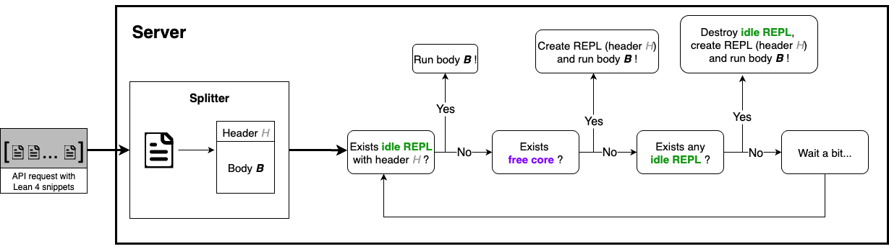

Kimina Lean Server: A High-Performance Lean Server for Large-Scale Verification
一句话：用 Lean 形式化证明给定理证明模型做强化学习，瓶颈不在模型而在「验证」——每条候选证明都要重新加载庞大的 Mathlib 库再编译，慢且不可扩展。本文用服务端并行（一核一个 Lean REPL）+ LRU import 缓存（复用已加载好库的 worker）把验证吞吐拉到比次优工具快 1.5–2×，并配一个「一个 check 函数搞定」的轻量 Python 客户端，已支撑 Kimina-Prover 两度登顶 miniF2F。
本页基于已抓取的 arXiv HTML 原文（v3）正文、表格与官方架构图构建。术语首次出现时给出英文原词，便于对照原文。
header（import）+ body，用 header 当 key 复用「已经加载好 Mathlib」的 worker，省掉最贵的初始化。check() 调用提交一批证明、拿回结构化反馈（报错、环境 id、耗时、可选 infotree），并行与缓存全在服务端透明完成。近两年的形式化数学 AI（neural theorem proving）有一条清晰的主线：把大语言模型接到 Lean 4 这样的交互式证明助手上，用「证明对不对」作为强化学习的奖励信号来训练模型。Kimina-Prover、DeepSeek-Prover-v2、Seed-Prover 等 SOTA 工作都走这条路。
但这条路有一个容易被忽视的工程现实：RL 每一步都会产生成千上万条候选证明，全部要送进 Lean 编译验证。验证一旦慢，整条训练流水线就被拖住。而验证之所以慢、之所以难扩展，根子在两处：
社区已有不少把 Lean 4 接到 Python 的工具，各有取舍。把它们按「能不能并行、能不能缓存 import、能不能提取数据、适不适合大规模 RL」摆在一起，就能看清 Kimina Lean Server 想补的那块空白：
| 工具 | 跨核并行 | import 缓存 | 证明数据提取 | 大规模 RL 验证 |
|---|---|---|---|---|
| LeanREPL（官方） | ✕ 单线程 | ✕ | 部分 | ✕ |
| Pantograph | ✕ 单线程 | ✕ | ✓ 强 | ✕ |
| leanclient | ✓（LSP） | ✕ | ✕ | 有限 |
| LeanInteract | ✓（多 REPL） | ✕ | ✕ | 有限 |
| LeanDojo / ProofWala | 部分 | ✕ | ✓（gym 式） | ✕ 慢 |
| Kimina Lean Server | ✓ 一核一 REPL | ✓ LRU | ✓ infotree | ✓ 专门设计 |
展开看每个工具具体怎么做、卡在哪——尤其是为什么「能并行」也不等于「适合大规模 RL」：
做法：read-eval-print loop（读取-求值-打印循环），是 Lean 官方提供的最底层 Python 交互入口，其它工具大多构建在它之上。
卡在哪：原生不支持多行 have/let 写法、calc 模式、conv 模式；而且本质单线程，吃不满多核，不为高吞吐设计。
与本文关系：Kimina 服务器直接构建在官方 LeanREPL 之上，因此天然兼容 REPL 支持的任何 Lean 版本——把它的单线程包成多进程池。
做法：独立处理 subgoal，支持 have/let/conv/calc，能提取 tactic state 和带注释的完整证明脚本，弥补了 LeanREPL 的表达力短板。
卡在哪：和 LeanREPL 一样仍是单线程，没有为大规模 RL 的高吞吐验证设计。
与本文关系：Kimina 在客户端用 infotree 处理补上了 calc/conv/have/let 这些「难提取」的 tactic（见后文），同时保留并行能力。
做法：走 LSP（Language Server Protocol）通道，能并行批量处理多个文件。
卡在哪：并行能力有了，但大规模训练下性能仍受限，且不做证明数据提取（拿不到单步 tactic 与 tactic state）。
与本文关系：本文的主要性能对比基线之一。Kimina 在 8/16/32/64 核全面更快。
做法：用 LeanREPLConfig + 多个 AutoLeanServer 实例（官方推荐：每进程一个）来并行跑证明。
卡在哪：每条证明各自一个 server，没有 import 复用/缓存；要管理可复用的实例池，正是本文付出的工程量。性能仍受限，也不做数据提取。
与本文关系：本文另一个主要基线，也是说明「缓存」价值的反例。
做法：构建交互式「健身房」环境，便于做 proof search 与提取训练数据，功能全面。
卡在哪：没有为现代 RL 工作流所需的验证速度做优化——能提数据，但验证吞吐跟不上大规模训练。
与本文关系：本文要在「数据提取能力」之外，额外把验证速度做到适合 RL 的量级。
已有工具要么并行但不缓存 import（leanclient/LeanInteract），要么能提数据但太慢（LeanDojo/ProofWala），要么单线程（LeanREPL/Pantograph）。
本文切入点：把「并行 + import 缓存 + 数据提取 + 轻量客户端」一次性整合到一个为大规模 RL 专门工程化的服务器里。
Kimina Lean Server 对外是一个 REST API（任何语言都能调），对内由四块互相配合的设计组成。前两块在服务端负责「快」，后两块在客户端负责「好用」：
header(import) + body，用 header 当 key 在 LRU 缓存里找「已加载好库」的 worker，命中就只跑 body。check() 提交一批脚本、拿回结构化结果；并行与缓存对用户完全透明。下面先看服务端的架构与调度（全文最重要的图），再看客户端怎么用。
这张官方架构图是全文的核心。它回答一个具体问题：一条带 Lean 代码的请求进来后，服务器按什么优先级把它派给某个 Lean REPL？ 关键就在「能不能复用一个已经加载好同样 import 的 worker」。

import 等声明）和 Body B（其余的定理与证明代码）。H 就是后面缓存用的「钥匙」。一句话总结：调度按「复用命中 > 用空核新建 > LRU 驱逐后新建 > 等待」的优先级派发——既尽量吃满多核，又尽量复用昂贵的 import 缓存。
把上图的四级判断拆开，跟着一条新请求看它如何一级一级地往下落，直到被某个 REPL 接住：
check() 提交，一棵 infotree 提数据服务端再快，调用麻烦也没人用。Kimina 的客户端是一个 PyPI 包，把 REST API 包成最简单的形式：所有交互都通过一个 check() 调用——传入一批 Lean 脚本，返回一批结果，并行执行与 REPL 缓存全在服务端幕后完成。
每条结果里包含：Lean 的告警/报错信息、REPL 环境标识、耗时、以及一个可选的 infotree。下面是最小用法：
# 高层接口：一行跑完一个 benchmark（自动加载/处理数据） from kimina_client import KiminaClient client = KiminaClient() client.run_benchmark( dataset_name="AI-MO/NuminaMath-LEAN", n=1000, batch_size=8, max_workers=10, )
check()点开看如何逐条提交并读取每条的验证状态from datasets import load_dataset from kimina_client import KiminaClient from kimina_client.models import Snippet dataset = load_dataset("AI-MO/NuminaMath-LEAN", split="train") dataset = dataset.filter(lambda x: x["ground_truth_type"] == "complete") dataset = dataset.select(range(1000)) client = KiminaClient() snippets = [ Snippet(id=str(dataset[i]["uuid"]), code=dataset[i]["formal_ground_truth"]) for i in range(len(dataset)) ] # 一个 check 调用，服务端并行 + 缓存全透明 resp = client.check(snippets, timeout=120) for r in resp.results: print(r.id, r.analyze().status.value)
训练树搜索（tree search）模型需要把一条证明拆成一步步的 tactic，并记录每步执行前后的目标状态（goals）。Lean 的 infotree 信息丰富但原始、且不同 tactic 的区间会互相重叠。客户端用一条小流水线把它清洗成规整序列：
have/let/calc/conv）。have、let、calc 模式与 conv 模式——这正是树搜索数据最容易丢失的部分。
# 用 infotree="tactics" 取回原始证明轨迹，再解析成步骤 resp = client.check(snippets, timeout=120, infotree="tactics") infotree = resp.results[0].response["infotree"] header, body = split_snippet(sample["formal_ground_truth"]) intervals = extract_data(infotree, body) # intervals: 每个元素含 goalsBefore / tactic / goalsAfter 三个字段
INTERVAL 1 Goals before: a b c : ℝ , h : a*b*c = 1 , haux : 1 + a + a*b ≠ 0 ⊢ a/(a*b+a+1) + b/(b*c+b+1) + c/(c*a+c+1) = 1 Tactic: by have : a*b*c ≠ 0 := Goals after: ... ⊢ a*b*c ≠ 0 INTERVAL 2 Goals before: ... ⊢ a*b*c ≠ 0 Tactic: by rw [h]; Goals after: ... ⊢ 1 ≠ 0
每一步都清楚记录「执行前的目标 → 用的 tactic → 执行后的目标」，正是树搜索模型需要的监督信号。
这是一篇务实的工程报告，几处设计取舍比 benchmark 数字更能说明它「为什么这么做」：
验证一条证明，最贵的部分是加载库而非编译 body。把脚本拆成 header/body 后，只要 header（import 集合）相同就能复用已热身的 REPL——而 RL 训练里成千上万条证明往往共享同一行 import Mathlib，命中率极高。
启发：缓存的粒度要对准「最贵且最常重复」的那部分，而不是整段输入。
Lean REPL 单线程、占用不超过一个核，所以每核常驻一个 REPL 是最自然的并行粒度。实验机还关闭了 SMT（超线程）——对这种 CPU 密集型任务，超线程会拖慢整体并带来不可预测的抖动。
启发：把并行单位对齐到硬件的真实并行度，比盲目开更多线程更稳。
客户端只暴露一个 check()：传一批脚本、拿一批结构化结果。LRU 缓存、进程池、LRU 驱逐、排队重试这些复杂逻辑全部对调用者透明，极大降低「从 Python 调 Lean」的门槛。
启发：基础设施的价值，一半在性能，一半在「让别人能轻松用上这份性能」。
服务器直接构建在官方 LeanREPL 之上，所以兼容 REPL 支持的任何 Lean 版本。架构还是模块化的：只需小改进程派生（spawn）逻辑，就能换用别的 Lean 证明检查器，同时保留同一套 REST API。
启发：把「调度/缓存」与「验证内核」解耦，系统才有长期可维护性。
一句话：在 9,419 条 NuminaMath-LEAN 证明上，Kimina Lean Server 在 8/16/32/64 核全面快于 leanclient 与 LeanInteract（1.5–2×）；缓存单独再带来 1.94× 加速；吞吐随核心近线性扩展。 它已作为 Kimina-Prover 的核心验证引擎，支撑后者两度在 miniF2F 上登顶。
处理同样的 9,419 条证明，耗时越低越好。Kimina 在每个核数上都是最快的：
| 工具（验证总时长 mm:ss） | 8 核 | 16 核 | 32 核 | 64 核 |
|---|---|---|---|---|
| leanclient | 109:55 | 56:58 | 30:16 | 18:01 |
| LeanInteract | 87:35 | 45:51 | 24:11 | 12:56 |
| Kimina Lean Server | 42:40 | 21:48 | 11:33 | 7:56 |
从 8 核到 32 核，总耗时从 42:40 降到 11:33，近 4× 加速——说明并行设计能真正吃到多核红利。
| # CPU 核 | 总验证时长 (mm:ss) | 单条均耗 (s) |
|---|---|---|
| 8 | 42:40 | 0.272 |
| 16 | 21:48 | 0.139 |
| 32 | 11:33 | 0.074 |
| 64 | 7:56 | 0.051 |
同在 64 核下，对比「每条证明都新起 REPL」与「复用预热 REPL」两种模式：
| 模式 | 总验证时长 (mm:ss) | 单条均耗 (s) |
|---|---|---|
| Cached（缓存复用） | 7:56 | 0.051 |
| Non-Cached（每条新建） | 15:28 | 0.099 |
实验环境：GCP C4 虚拟机（第 5 代 Intel Xeon），72 vCPU / 540GB RAM，关闭超线程（SMT），Lean v4.15.0，全程本地运行以排除网络延迟。
这是一份目标明确的基础设施报告，它的适用性也很清晰：
import Mathlib）的大规模验证 / RL 训练 / 证明数据提取——这正是缓存命中率最高、收益最大的场景。check()，就能让验证从训练瓶颈变成顺手的工具。